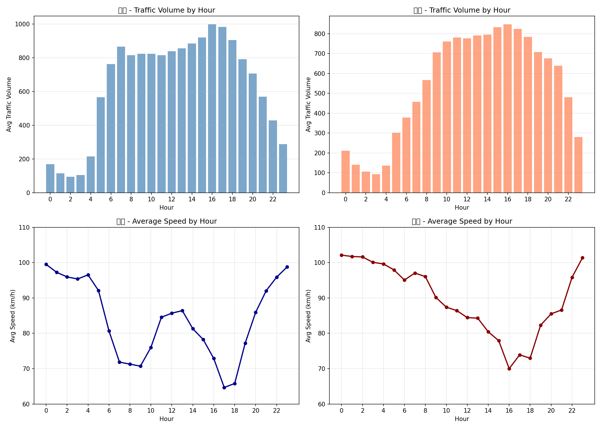

📊 언제 가장 막힐까요?
요일별 속도 비교

막대: 평균 교통량 / 선: 평균 속도
🥇 일요일 (92.1 km/h)
가장 원활한 요일입니다. 주말 나들이 차량은 많지만 흐름은 빠릅니다.
🐢 금요일 (81.6 km/h)
가장 막히는 요일입니다. 주말을 앞둔 이동 수요가 겹쳐서 가장 느립니다.
시간대별 패턴

⚠️ 오후 5시(17시) 주의!
보통 아침이 막힌다고 생각하지만, 실제 데이터는 오후 5시가 가장 느렸습니다 (평균 67km/h).
보통 아침이 막힌다고 생각하지만, 실제 데이터는 오후 5시가 가장 느렸습니다 (평균 67km/h).